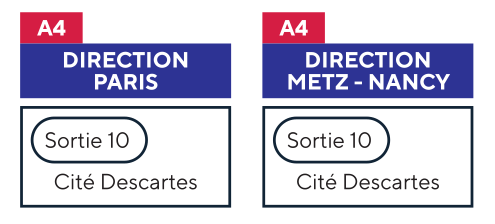

Adresse & Contact
Accès au site
6-8 Avenue Blaise Pascal
Cité Descartes
Champs-sur-Marne
77455 Marne la Vallée
CEDEX 2
France
Cité Descartes
Champs-sur-Marne
77455 Marne la Vallée
CEDEX 2
France
| Par le RER A | Par l’autoroute A4 |
|---|---|
|
Directions Marne-la-Vallée depuis Paris ou Cergy/Poissy/St-Germain-en-Laye depuis Marne-la-Vallée Descendre à station Noisy-Champs, sortie n°3 Cité Descartes (tête de train) |
 |

LASTIG SUMMER SCHOOL 2025 · Photogrammetry · Remote Sensing · GNSS data · GIS ·